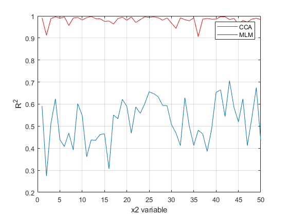

clear all
close all
rho = 0.5;
d1 = 50;
d2 = 50;
k = ceil(2*d1*d2/(d1+d2)*rho);
m = 1;
N = 1000;
sigma = 0.1;
e1 = sigma*randn(d1,N);
x2 = randn(d2,N);
T = randn(d1,d2);
x1 = T*x2 + e1;
options.maxIter = 512;
options.tol = 10^(-6);
tic; cca = vbcca(x1,x2,k,m,options); els=toc
con.Gamma1 = eye(d1);
con.Gamma2 = eye(d2);
[x1pred,gamma,p1,T12] = vbcca_cond_subspace (cca,x2,con);
x1_r2 = compute_r2 (x1',x1pred');
x2pred = vbcca_cond_context (cca,x1,con);
x2_r2 = compute_r2 (x2',x2pred');
figure
subplot(2,2,1);
imagesc(T); colorbar
title('True')
subplot(2,2,2);
imagesc(T12{1}); colorbar
title('CCA Estimated')
subplot(2,2,3);
imagesc(T-T12{1}); colorbar
title('Difference')
options.pr='global';
options.ml_only = 0;
options.verbose = 1;
options.pseudo = 1;
tic; txt1 = evalc('mlm_r1 = spm_mlm_bayes(x1'',x2'',options);'); toc
tic; txt2 = evalc('mlm_r2 = spm_mlm_bayes(x2'',x1'',options);'); toc
x1hat = mlm_r1.wmean'*x2;
x2hat = mlm_r2.wmean'*x1;
x1_r2_mlm = compute_r2 (x1',x1hat');
x2_r2_mlm = compute_r2 (x2',x2hat');
figure
subplot(2,2,1);
imagesc(T); colorbar
title('True')
subplot(2,2,2);
imagesc(mlm_r1.wmean'); colorbar
title('MLM Estimated')
subplot(2,2,3);
imagesc(T-mlm_r1.wmean'); colorbar
title('Difference')
figure
plot(x1_r2);
hold on
plot(x1_r2_mlm,'r');
legend({'CCA','MLM'})
xlabel('x1 variable')
ylabel('R^2')
grid on
figure
plot(x2_r2);
hold on
plot(x2_r2_mlm,'r');
legend({'CCA','MLM'})
xlabel('x2 variable')
ylabel('R^2')
grid on
p_CCA = m*k*(d1+d2);
p_MLM = 2*d1*d2;
disp(sprintf('Number of CCA params = %d',p_CCA));
disp(sprintf('Number of MLM params = %d',p_MLM));
Replicate 1, 1 iterations, total sum of distances = 2.48933e+06.
Best total sum of distances = 2.48933e+06
Iteration64, Lower bound:-135825.1567
Iteration128, Lower bound:-135744.3993
Iteration192, Lower bound:-135706.3481
Iteration256, Lower bound:-135675.9332
Iteration320, Lower bound:-135648.847
Iteration384, Lower bound:-135623.9973
Iteration448, Lower bound:-135600.8929
Iteration512, Lower bound:-135579.2308
els =
12.7980
Elapsed time is 114.861047 seconds.
Elapsed time is 115.796143 seconds.
Number of CCA params = 2500
Number of MLM params = 5000
